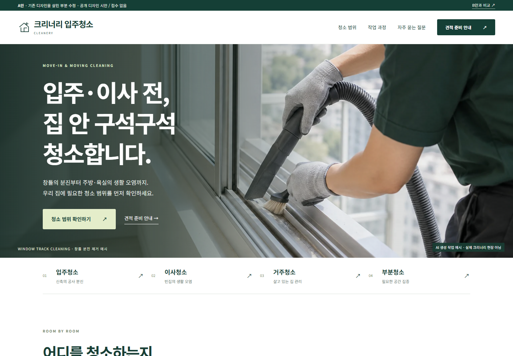
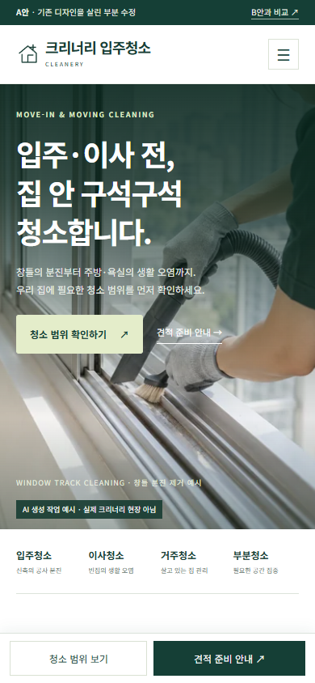
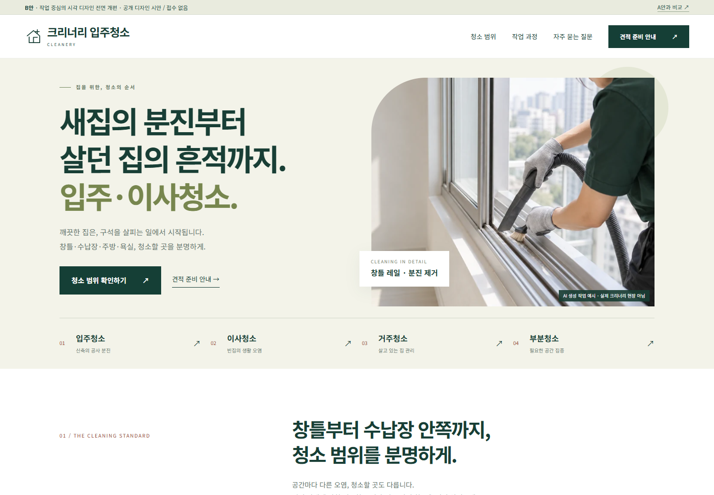
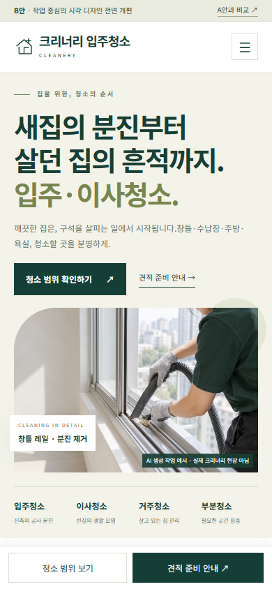

같은 청소 현장, 다른 두 가지 첫인상.
아빠, A안은 기존 분위기를 살리고, B안은 화면 구성을 새로 설계했어.
두 링크 모두 PC·스마트폰 크기에 맞춰 작동해. 아래는 실제 브라우저 캡처야.
A안 · 기존 디자인 유지
대형 작업 사진 + 구체적인 입주·이사청소 문구.
녹색·화이트, 기존 브랜드 분위기와 정보 흐름을 유지.


B안 · 시각 디자인 개편
명확한 제목 + 밝은 분할 화면 + 작업 사진.
청소 종류·범위를 먼저 읽는 정보 구성을 강조.


아침에 결정할 것 — 세 가지만
- 기본 방향: A의 기존 분위기 / B의 밝고 명확한 구성 / 두 안의 요소 혼합 중 선택.
- 대표 문구: A의 “입주·이사 전, 집 안 구석구석 청소합니다.” 또는 B의 “새집의 분진부터 살던 집의 흔적까지. 입주·이사청소.”
- 실제 작업 사진: 추후 사용할 수 있는 자사 사진이 있으면 준비. 없으면 예시 표시를 유지하고 별도 촬영 계획을 세우면 돼.
기존 홈페이지에 적용하는 것은 이 시안을 검토한 뒤 결정하면 돼. 가격·상담 연락처·서비스 지역·실제 접수 정책은 운영 준비 때 따로 확정할 항목으로 남겼어.
이번에 만든 범위
| 시안 구현 | 각 안의 반응형 메인 화면, 청소범위 탭, 작업 과정, FAQ, 견적 준비 안내창, 모바일 메뉴·하단 버튼. |
|---|---|
| 사진 | 내장 이미지 생성 도구로 제작한 청소 동작 예시. 두 안에 같은 이미지를 사용해 구성 차이를 비교. 화면에 “AI 생성 작업 예시 · 실제 크리너리 현장 아님” 표시. |
| 실제 접수 | 없음. 개인정보 입력·저장·전송·외부 고객 연락 없음. |
| 기존 홈페이지 | 기존 cleanery 코드·데이터·기능·상담봇은 변경하지 않음. 별도 시안 경로만 추가. |
| 검증 범위 | Chrome PC1440·모바일390·소형320 화면, 메뉴·탭·키보드·FAQ·안내창·새로고침·이미지·오버플로·콘솔. 실제 스마트폰 기기 및 사람 대상 3초 인식 테스트는 이번 검증에 포함하지 않음. |